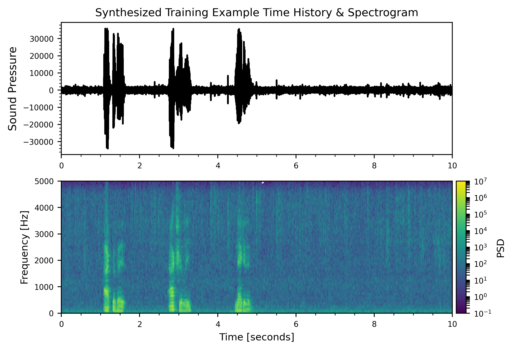
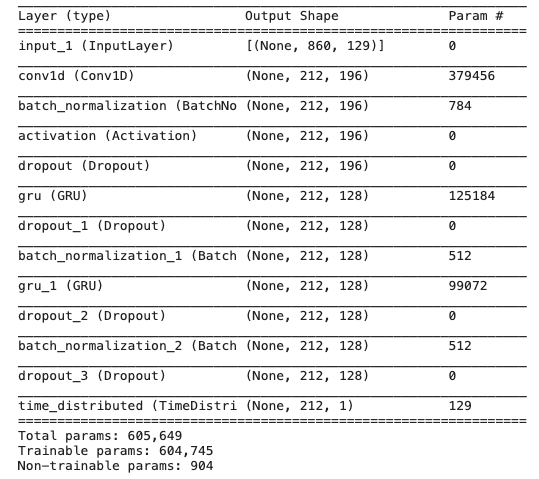
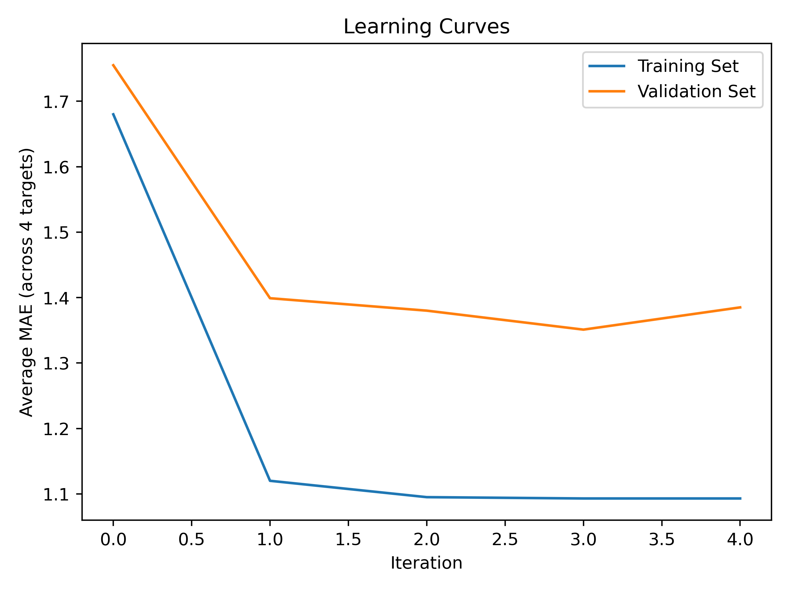
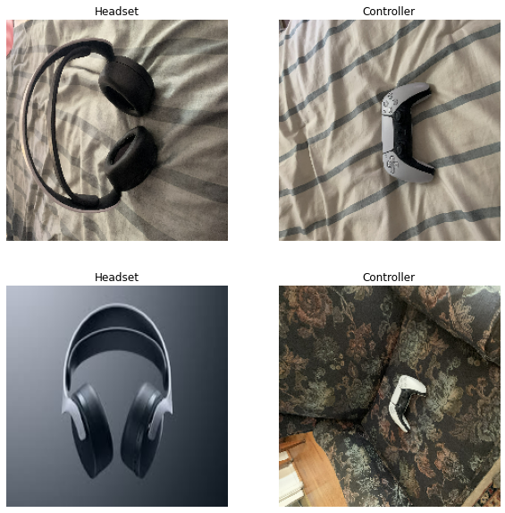
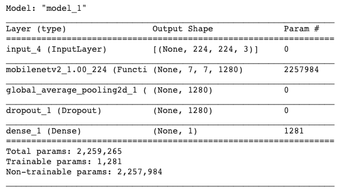
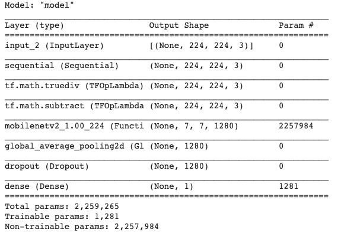

The first step was to synthesize a dataset for training the RNN. Various examples of the wake word ("activate" for this project) and negative words (any word other than the wake word) were recorded using a Macbook Air's onboard microphone. Background noise was also required, since in practice, it is highly unlikely the wake word will always be spoken in a noise-free environment. Openly available, license free background noise from different environments was downloaded from the internet (https://freesound.org/browse/). Five different background environments were considered: a plane flying overhead, rainfall, city traffic, cafe noise, and silence. Note that this list could easily be expanded based on performance requirements and the expected operating environment of the system. Instances of wake word, negative word, and background noise recordings are provided below.
With the raw data now assembled, the next steps were to: 1) overlay the wake word, negative word, and background noise recordings into a single recording and 2) create the training labels. PyDub (https://github.com/jiaaro/pydub), a Python package for manipulating audio, along with various Python helper functions, were used for these steps. To synthesize the audio sources, a background noise was selected at random (from the five available), and zero to four instances (chosen at random) of the negative and wake words were superimposed. This process was repeated multiple times to obtain 1000 unique training examples. To create the training labels, a simple Python function was used to create a vector of zeros and ones. Zeros were used when no wake word was present, and ones were used for about a second after a wake word had been spoken. An example of a synthesized recording with its label is shown below.
The next step was to perform feature engineering on the processed dataset. This may be a bit surprising at first, because neural networks by design already generate features as part of their training (hidden layers essentially do feature engineering). However, in this instance, it is quite difficult (if not impossible) for a model to learn from a raw time series whether a particular word was said. It would likely require a lot of training data, along with significant computational power to train such a model. As such, further processing was performed on the synthesized dataset to convert it a form where a neaural network could more easily learn patterns from (i.e. feature eningeering). Specifically, it was converted from a time series representation to a time-frequency representation via the spectrogram. A spectrogram computes the Fourier transform on segments of the time series to identify the frequency content of the signal as a function of time. This new spectrogram representation "decodes" the time series data into frequency components, which the RNN can hopefully pick up on. The idea is that different words will have different frequency components / magnitudes, and hopefully the RNN can learn to detect these patterns. As such, spectrograms were computed on the individual training examples using segment lengths of 256 samples with 50% overlap and a Hann window. These spectrogram parameters can be considered hyperparameters, and sensitivity studies could be performed to assess performance impacts. The stated parameters are fairly standard Fourier transform computation parameters used in modern digital signal processing, and were found to give sufficiently satisfactory performance, as will be demonstrated later. Additionally, it is worth nothing that prior to spectrogram computation, the signals were decimated from 44.1 kHz (source sampling frequency) to 11 kHz. The reason for this is as follows: the human voice, on average, has an upper frequency range of about 4 kHz; anything above this will not be indicative of whether a particular word was spoken. By decimating down to 11 kHz, we are preserving frequency content that is valuable to our model while discarding uninformative information and simulatenously reducing dataset size ( which reduces computational burden). A time history and spectrogram corresponding to the synthesized example above is shown below.
With a fully assembled training dataset in the form of spectrograms now available, the next step was to train the RNN. The RNN architecture is summarized in the image below, and was implemented in Keras. To briefly summarize the network, a temporal convolution with 196 filters was used to reduce the number of time steps for computational efficiency purposes. The convolution results were run through a ReLU activation function, followed by a dropout layer with a 80% dropout rate. This is followed by two sequential 128-layer gated recurrent units (GRU's) with batch normalization and dropout sandwiched in between to aid in training convergence and avoidance of overfitting. A time-distributed dense layer with a sigmoid activation is used to output predictions as a function of time. This architecture results in 604,745 trainable parameters.
For model training, an Adam optimizer with a binary cross-entropy loss function was used. Since the predictions can either be 1 or 0, binary cross-entropy is appropriate (as is sigmoid activation). A learning rate of 0.01 with decay of 0.01 and default beta parameters (as specified by Keras) was used with the Adam optimizer. Monitored metrics were loss, accuracy, precision, recall, and F1 score. Of most importance was the F1 score, since accuracy was not a good gauge of performance due to the labels being heavily skewed toward 0. A training/validation split of 70%/30% was used for training, and was performed on a GPU for 100 epochs with batch sizes of 64. The resulting loss and F1 score as a function of epoch is shown below.
As is evidenced by the learning curves, the RNN does an excellent job of learning to identify trigger words, with an achieved validation F1 score of 97%. To further visualize the predictions of the model for a given input, two spectrograms with the resulting model predictions are shown below along with their ground truth labels. The example on the left corresponds to the example considered above, and the example on the right is from the validation set (note the different background noise of a cafe). Additionally, the synthesized audio file was augmented with a chime everytime a trigger word was detected. The resulting audio samples are below their respective spectrograms / predictions.
Additional work could involve model and/or hyperparameter tweaks to further improve performance. Further data collection and synthesis could also be performed to ensure the trigger word system meets performance requirements for different users (i.e. age group, gender, etc.) in all specified environments. All relevant Python code used in this project can be found here.
Participated in a Kaggle competition tasked with predicting four measures of digital engagement given historical MLB player and team data.
The training dataset was quite extensive, and included player performance and awards data, social media data, trade data, team performance data,
and standings data, all going back to 2018. For further logistical details about the competition, please visit the Kaggle competition webpage
here.
A significant amount of effort was expended on the data pipeline due to the breadth and format of the data (~2 million data points). Pandas was used extensively for dataset merges, feature engineering, and missing value processing. The processed data was then applied to multiple gradient boosting regressors (XGBRegressor), with one XGBRegressor model for each digitial engagement target. Gradient boosting machine models were selected for their minimal requirements on data scaling and historically proven performance. Due to time constraints, a data-centric approach was taken to the machine learning solution process where effort was focused on improving data features rather than hyper-paramter model tuning. Several iterations of feature sets were run through a cross-validation (CV) scheme to assess if the updates yielded performance gains or losses. The CV scheme was chosen carefully to coincide with the approximate monthly time frame where predictions were to be made for final scoring. A dummy regressor that predicted the average value of each digital engagement target was used to establish a performance floor. Learning curves can be seen below for various iterations.
Feature importance, an embedded feature engineering method inherent to tree-based models, was used to assess the relative importance of features and determine if any actions could be taken to improve performance (such as elimination of unimportant features). Analysis of the feature importances showed several features related to player teams that were not being used by the XGBRegressor tree algorithm. Instead of eliminating these features outright, a clustering approach was taken. In the baseline model, each team is treated as an independent feature. In the clustering approach, the teams are clustered into 5 groups based off a K-Means alogrithm with historical team payroll and fan attendance data that was scraped off the web. The result was a ~20% reduction in number of features, with slight performance (MAE) gains (iteration 2 to 3 in the learning curve). Example plots of a subset of the feature importances and resulting team clusters can be seen below.
Final placing is yet to be determined, but as of today, I placed 364th out of 852 teams. A respository containing the relevant Python code used for the project can be found here.
This project is inspired by tutorials found on the TensorFlow and Keras websites. A simple image classification model was built in Keras using transfer learning from a pre-trained MobileNet V2 model. The MobileNet model was pre-trained on a subset of ImageNet consisting of ~1.4 million images and 1000 classes. The idea was to leverage the learned features from the "bottom" layers of the pre-trained MobileNet model, and transfer these to a new model. The "top" layer(s) of this new model could then be trained to classify images of a PlayStation 5 (PS5) controller and headset. It should be noted that a PS5 controller and headset are not among the 1000 classes present in the ImageNet database used to train the MobileNet model.
The first step was to assemble a training dataset. Web scraping along with manual photos taken with an iPhone 10 were used to assemble a dataset of 100 images, with 50 for each class. Different orientations and backgrounds / locations were used to ensure diversity in the dataset. A 70% / 30% split was used for training and validation, respectively. An example of a few images from the training set can be seen below. Note that the images appear warped and/or fuzzy due to the resizing that occurs as part of the image pre-processing that's required for input to the MobileNet model. More on this later.
With the training dataset now assembled, the next step was to create the model. Pre-trained MobileNet V2 model weights, excluding the top (classification) layer, were loaded into memory and "frozen". By "freezing" these weights, they are prevented from updating during subsequent training. A 2D average pooling layer was then added on top of the frozen layers to reduce dependence on granular features learned from ImageNet. In other words, the pooling layer averages over the pre-learned granular features specific to the 1000 classes in ImageNet and "picks up" on the global features. An optional dropout layer can then be included after the 2D average pooling layer to reduce dependence on any specific global feature. A dropout layer with 20% dropout rate is included in this implementation as it was found to give satisfactory results. Finally, a fully connected (FC) dense layer is added on top of the average pooling layer with a sigmoid activation function. This FC layer is necessary because it is where the model will learn to classify the new objects - the 2D pooling layer does not have any trainable parameters. An image of the model stack is shown below. As can be seen, it contains a total of 1281 trainable parameters, all contained within the FC layer.
Before moving on to model training, two important topics to briefly discuss is data augmentation and data pre-processing. In image classification problems, it is often feasible (and good practice) to augment the training dataset with additional images derived from applying perturbations to the source images. These perturpations should be realistic and model expected variations that could be encountered in future images. For this project, two perturbation were used on each source image: a random horizontal flip and a random rotation of up to 72 degrees. These pertured images will provide more realistic variance than just using the source data as-is, and hopefully make the overall model more robust. Additionally, as alluded to previously, the source / augmented images must be pre-processed prior to ingestion into the model. The MobilNet model expects the images to be of size (264, 264, 3), which is likely not the same size the source images are in. This can be handled directly upon loading the dataset using the Keras 'image_dataset_from_directory' function. The final pre-processing step is to normalize the image pixel values to [-1, 1], the range expected by the MobileNet model. Conveninently, the MobileNet model includes a method to perform this normalization, and can be included as an extra layer in the built model. Note that both the data augmentation and data pre-processing can be included seperate from the model as part of the data pipeline, but in this case, it was included as part of the model pipeline. The data augmentation and data pre-processing layers are only executed during training, and are not used during validation / inference. An image of the final model stackup that includes the data augmentation and pixel scaling is shown below. This workflow results in no single image being trained on more than once.
The next step was to train the model. An Adam optimizer with default parameters (as specified by Keras) was used with a binary cross-entory loss function. Monitored metrics were loss and accuracy. As previously mentioned, a 70%/30% training / validation split was used. The training was run with a batch size of five for five epochs. The resulting loss and accuracy as a function of epoch is shown below. As can be seen, the model successfully (and quickly) learns how to accuractely classify the PS5 controllers and headsets.
Further work (although it'd be overkill for this project) could include fine tuning of the "frozen" top-most layers to further enhance performance. This type of tuning would likely be necessary for more challeneging problems involving more classes. A repository containing the notebook used for this project can be found here.